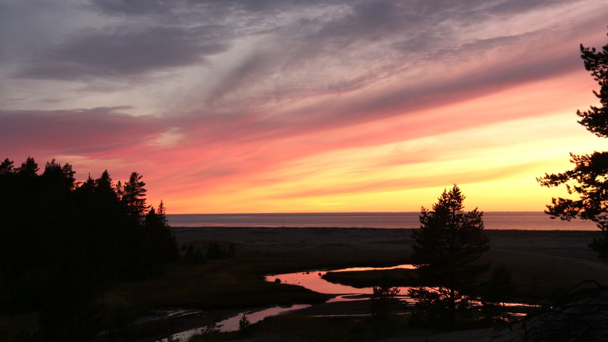

К услугам гостей
- 24 номера различных категорий в корпусах «Морской» и «Таёжный»
- Ресторан поморской кухни
- Двусветное лобби с камином
- Конференц-зал
- СПА-комплекс с бассейном
- Русская баня на дровах
- Купели под открытым небом
- Центр проката техники и снаряжения
- Центр водных видов отдыха
- Причал
- Вертолётная площадка
- Аэродром круглогодичного использования для частных легкомоторных самолётов